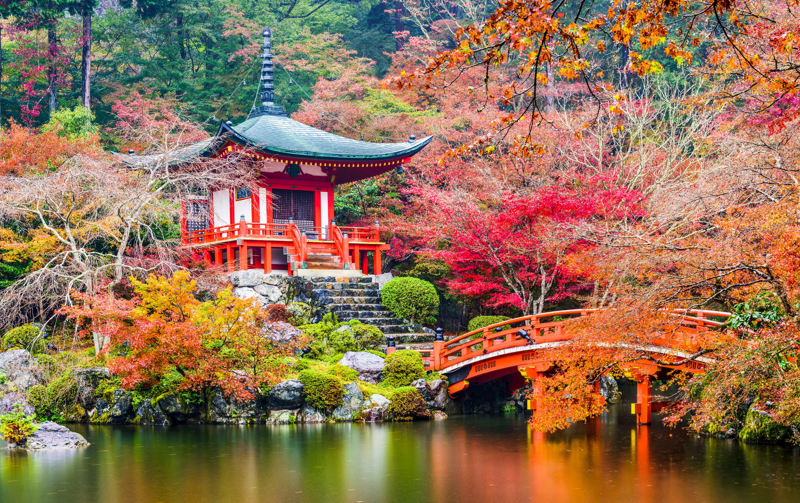

About Tokyo
Tokyo, Japan is a vibrant, bustling metropolis and one of the most influential cities in the world. Known for its unique blend of cutting-edge technology, traditional culture, and high-energy atmosphere, Tokyo is a dynamic global hub of commerce, fashion, entertainment, and innovation.
Layout and geography
 Tokyo is located on the eastern coast of Japan's main island, Honshu. It is part of the Greater Tokyo Area, which is one of the largest and most populous metropolitan regions in the world. Tokyo proper is a sprawling city made up of 23 special wards, each functioning almost like an individual city with its own government and identity. The city's districts are distinct in character, offering everything from futuristic skyscrapers to historical temples and serene gardens.
Tokyo is located on the eastern coast of Japan's main island, Honshu. It is part of the Greater Tokyo Area, which is one of the largest and most populous metropolitan regions in the world. Tokyo proper is a sprawling city made up of 23 special wards, each functioning almost like an individual city with its own government and identity. The city's districts are distinct in character, offering everything from futuristic skyscrapers to historical temples and serene gardens.
Modern attraction
 Tokyo Disneyland: Famous theme parks.
Odaiba: Futuristic entertainment island.
Akihabara: Electronics and anime hub.
Shinjuku: Shopping, nightlife, and views from skyscrapers.
Shibuya Crossing: Iconic, busy intersection
Tokyo Disneyland: Famous theme parks.
Odaiba: Futuristic entertainment island.
Akihabara: Electronics and anime hub.
Shinjuku: Shopping, nightlife, and views from skyscrapers.
Shibuya Crossing: Iconic, busy intersection
Cuisine
 Tokyo is considered one of the world's best culinary cities, offering an incredible range of dining options. From high-end sushi at world-famous restaurants like Sukiyabashi Jiro, to bustling ramen shops in Shinjuku and Ikebukuro, Tokyo's food scene caters to all tastes and budgets. The city's vibrant fish markets, such as the Toyosu Market (which replaced the historic Tsukiji), are central to its culinary identity. Tokyo has more Michelin-starred restaurants than any other city globally.
Tokyo is considered one of the world's best culinary cities, offering an incredible range of dining options. From high-end sushi at world-famous restaurants like Sukiyabashi Jiro, to bustling ramen shops in Shinjuku and Ikebukuro, Tokyo's food scene caters to all tastes and budgets. The city's vibrant fish markets, such as the Toyosu Market (which replaced the historic Tsukiji), are central to its culinary identity. Tokyo has more Michelin-starred restaurants than any other city globally.
Conclusion
Tokyo is a city of contrasts—where tradition meets modernity, technology blends with nature, and the old coexists with the new. It’s a dynamic, culturally rich city offering endless exploration and experiences.
(Click The next photo)
